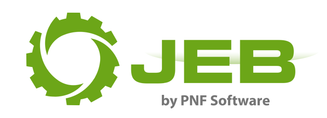
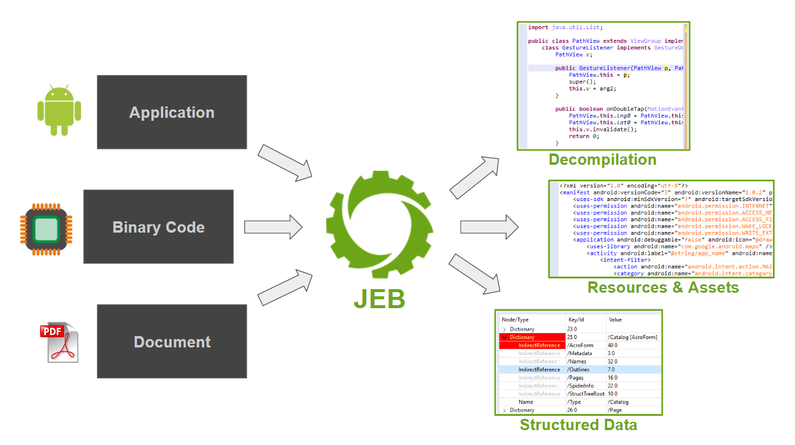
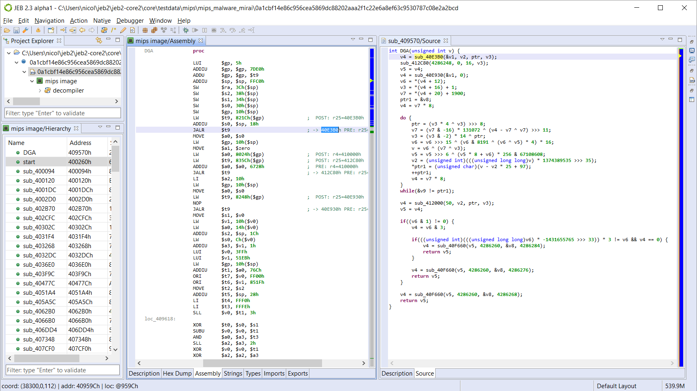
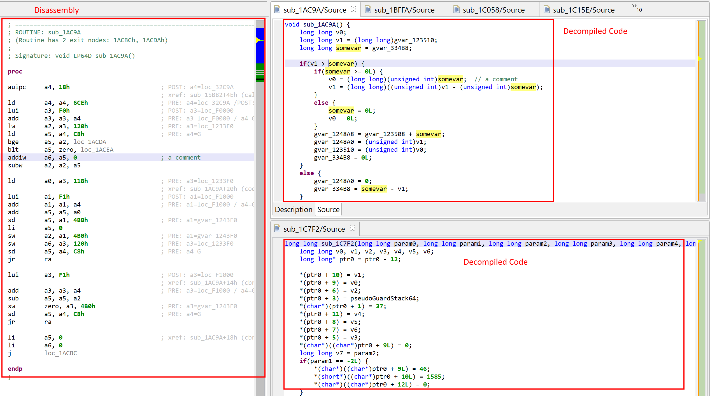
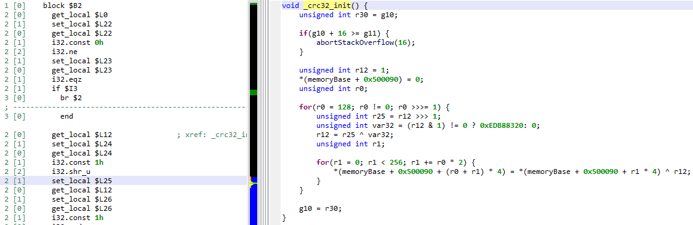
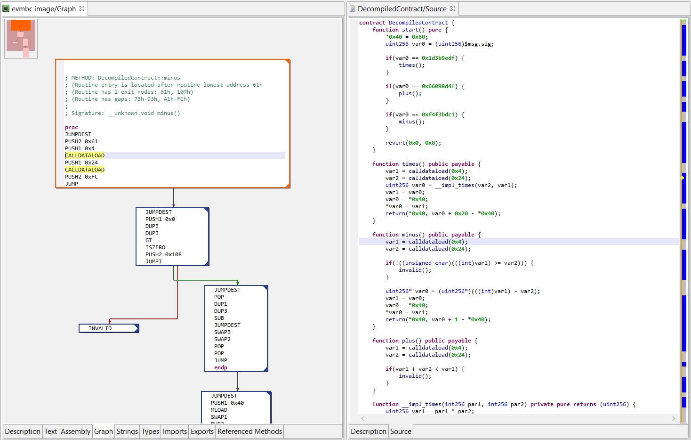

请访问原文链接：JEB Pro 5.43 (macOS, Linux, Windows) - 逆向工程平台 查看最新版。原创作品，转载请保留出处。
作者主页：sysin.org
JEB Decompiler

JEB 是逆向工程平台，用于对代码和文档文件进行反汇编、反编译、调试和分析，手动或作为分析管道的一部分。
反编译和调试二进制代码和混淆应用程序。分解和分析文档文件。
Android Dalvik，Intel x86，ARM，MIPS，RISC-V，S7 PLC，Java，WebAssembly & Ethereum Decompilers。

功能简介
Android 反编译器 + Android 调试器
使用 JEB 对恶意 APK 进行逆向工程和安全审计。
减少昂贵的逆向工程时间：在几分钟内反编译混淆的 APK、检查 Java 代码并调试闭源应用程序。模块化后端与适用于桌面平台的强大 UI 前端相结合 (sysin)，允许重构操作和脚本来自动执行复杂的任务。
对 Android 应用程序（无论好软件还是坏软件，无论大小）执行静态和动态分析。
- 使用 Dalvik 反编译器 反编译 代码，包括 multi-dex APK。
- 重构 分析以击败应用程序保护程序生成的混淆代码。
- 重建 资源和混淆的 XML 文件。
- 无缝 调试Dalvik 代码以及所有本机代码（Intel、ARM）。
- 通过 API 自动执行 逆向工程任务并编写脚本。
Intel x86 反编译器
使用 JEB 对 x86 32 位和 x86 64 位程序和恶意软件进行逆向工程
x86 反编译器和 x86-64 反编译器提供以下功能：
- 增强反汇编， 包括动态调用点解析、寄存器候选值确定、动态交叉引用等。
- 将 x86 和 x86-64反编译 为伪 C 源代码。
- 对于使用 MS VCPP 编译的程序，部分类恢复和反编译为 C++（参见视频）。
- 高级优化 可阻止受保护或混淆的代码 (sysin)。
- 用于高效 Windows 文件分析的 Win32 类型库 和 通用签名。
- 允许重构 的交互层：类型定义、堆栈框架构建、重命名 / 注释 / 交叉引用等。
- 完整的 API 和对 中间表示的 访问，以在 Python 或 Java 中执行高级和 / 或自动代码分析。
▶️ 点击观看视频演示
ARM 反编译器
使用 JEB 对为 ARM 平台编写的程序和恶意软件进行逆向工程
ARM 机器代码反编译器允许逆向工程师和安全审核员分析恶意 ARM 二进制文件
ARM 反编译器提供以下功能：
- 增强反汇编， 包括动态调用点和系统调用的解析、寄存器候选值确定、动态交叉引用等。
- 将 ARM 32 位和 ARM-Thumb 代码 反编译 为伪 C 源代码。
- 高级优化 可阻止受保护或混淆的代码。
- 允许重构 的交互层：类型定义、堆栈框架构建、重命名 / 注释 / 交叉引用等。
- 用于在 Python 或 Java 中执行高级和 / 或自动代码分析的 完整 API。
MIPS 反编译器
使用 JEB 对 MIPS 嵌入式程序和恶意软件进行逆向工程
MIPS 处理器和微控制器机器代码反编译器允许逆向工程师和安全审核员分析恶意 MIPS 程序并审核复杂的嵌入式系统（路由器、机顶盒、物联网设备等）
MIPS 反编译器提供以下功能：
- 增强反汇编， 包括动态调用点和系统调用的解析、寄存器候选值确定、动态交叉引用等。
- 将 MIPS 32 位 反编译 为伪 C 源代码。
- 高级优化 可阻止受保护或混淆的代码 (sysin)。
- 允许重构 的交互层：类型定义、堆栈框架构建、重命名 / 注释 / 交叉引用等。
- 用于在 Python 或 Java 中执行高级和 / 或自动代码分析的 完整 API。

RISC-V 反编译器
使用 JEB RISC-V 模块对 RV32/RV64 程序和二进制文件进行逆向工程
RISC-V 机器代码反编译器允许逆向工程师和安全审核员分析 RV32 和 RV64 程序
RISC-V 插件特有的功能：
- 代码目标文件：支持 Linux ELF、Windows PE 中的 RISC-V 或无头代码（例如固件）。
- 反汇编器：支持 RV32/RV64、以下 ISA 扩展的常规和压缩操作码：I（整数）、Zifencei、Zicsr、M（乘法）、A（原子）、F（单浮点）、D（双浮点），C（压缩）。请注意，目前不支持 RV128、RVE（嵌入式）和其他更 “奇特” 的扩展（mem tx、simd、向量等）。
- 反编译：支持 32 位和 64 位的 RVI（整数 / 通用操作的反编译）。计划添加对 F/D 扩展（浮点指令）的反编译器支持。
- 重定位：支持特定于 RISC-V 的常见 ELF 重定位。处理常见的 PLT 解析器存根。
- 调用约定：支持 ILP32D 和 LP64D 调用约定 (sysin)。可以定义自定义调用约定。
- 类型库：Linux 32/64 或 Windows 32/64 的 ARM 或 MIPS 类型库可以重复使用。

WebAssembly 反编译器
使用 JEB 对 WebAssembly 二进制模块进行逆向工程
WebAssembly 插件提供以下功能：
- 增强了 wasm 二进制模块的反汇编 和解析。
- 将 wasm 字节码 反编译 为伪 C 源代码。
- 高级优化 可阻止受保护或混淆的代码。
- 用于输入 / 重命名 / 注释 / 交叉引用等的 交互层。
- 脚本和插件的 完整 API 访问权限。
JEB WebAssembly 插件还可以用于 反编译编译为 wasm 的智能合约，例如 EOS 或 Parity 合约。

阅读技术论文 “逆向工程 WebAssembly”：https://www.pnfsoftware.com/reversing-wasm.pdf
Ethereum 反编译器
使用 JEB 将以太坊不透明智能合约和 dApp 逆向工程为类似 Solidity 的高级代码
减少昂贵的逆向工程时间：反编译以太坊智能合约 类似 Solidity 的源代码，可轻松理解和审查闭源合约和 dApp。
- 使用以太坊反编译器将 EVM 合约代码 反编译 为类似 Solidity 的高级代码。
- 对分析结果 进行注释，以更好地理解编译后的合约或 dApp 正在做什么。
- 通过 API 自动执行 或编写逆向工程任务脚本。
- 下方图片显示了以太坊主网上的合约的 JEB 双面板 “EVM 汇编 / 反编译代码” 视图。

Simatic S7 PLC 程序反编译器
S7 PLC 块反编译器扩展为逆向工程师和安全审核员分析西门子 Simatic S7 PLC 程序提供支持。
可访问官网了解完整详细信息。
PDF 文档分析器
使用业内最好的 PDF 文档分析器分析恶意 Adobe™ PDF 文件
PDF 模块分解并解码 PDF 文件，以提供对其内部组件（例如资源和脚本）的访问。它检测结构损坏并发出通知以报告可疑区域。通过桌面客户端或无头客户端（例如文件分析器堆栈或自动化管道）利用 PDF 模块。
使用 PDF 分析器手动或自动对各种尺寸的文档进行逆向工程。
- 将 PDF 结构分解为具有视觉吸引力且可导航的树。
- 处理损坏的文件、复杂的流（例如，多种编码等）。
- 检索分析器生成的 20 多个通知和警报 (sysin)，以查明可疑区域并使用它们对文件做出确定。
- 即使在最极端的情况下也可以提取嵌入的 Javascript 。
- 通过 JEB API 自动执行 逆向工程过程以执行批量分析。
▶️ 点击观看视频演示
新增功能
🧩 JEB 5.43（2026 年 8 月 18 日）
- apk：通用解包器：支持对加密资源或动态资源获取尝试进行处理
- apk：arsc 解析器：升级
- dexdec：字符串解密：新增功能
- dexdec：为无法移除的无用代码添加
FLAG_CLUTTER - arm：解析器升级
- evm：新增对
PUSH0的支持（更多更新将在下一个 JEB 版本中提供） - jdb2：允许数据库大小达到 4 GiB
- mcp server：新增
get_client_information工具 - mcp server：
run_script、open_project、add_artifact、save_project、close_project现已对所有客户端类型启用 - mcp server：改进针对 LLM 的错误报告
- mcp server：为
list_code_items和get_type_information工具新增use_original_names - gui：文件夹：改进拖放和重新停靠操作的流畅性
- gui：Android：解包器：新增设置对话框
- gui：Android：新增“添加资源”处理程序
🧩 JEB 5.42（2026 年 6 月 24 日）
- 调试器：Android JDWP 调试支持进行了重要升级与安全加固。
- 调试器：GDB/LLDB 调试支持进行了重要升级与安全加固。
- 调试器：LLDB 升级至 lldbserver 21.0.0。
- MCP：新增工具 save_project、add_artifact、run_script（仅限绑定到 localhost 的 MCP 服务器使用）。
- MCP：连接器改进，对于不受支持的消息类型不再导致连接失败（修复了 Claude 和 Gemini 连接器相关问题）。
- 脚本运行器：修复若干问题并进行了安全加固。
- ARM：反汇编支持新增 ARM 9.6 SIMD 指令集扩展。
- APK：修复多 DEX 文件存在对象池重叠时的问题，改为保留首个条目。
- DEX：渲染显示进行了细微优化调整 (sysin)。
- 图形界面：调试器新增“创建带选项的断点”对话框。
- 图形界面：更新了“附加（Attach）”对话框及相关界面组件。
- 图形界面：Vibre 改进历史记录导航体验。
- 图形界面：Vibre 更新了 LLM 预设配置。
- 图形界面：升级了 UI 库。
- 启动器：为
--script和--mcp模式新增--infile命令行参数。
🧩 JEB 5.41（2026 年 6 月 2 日）
- 反编译器（Decompilers）：多项改进
- 核心（Core）：问题修复
- Dart：新增对 3.11 版本的基础支持
- MCP：Vibre：新增对 OpenAI Responses API 的连接器支持（使用 OpenAI 推理模型时，可指定推理强度/思考力度）
- MCP：Vibre：支持在对话过程中热切换（Hot-Swap）模型 (sysin)
- MCP：服务器：使用 Streamable HTTP 替代 SSE（Server-Sent Events）
- MCP：工具：新增更多工具（
open_project、close_project） - MCP：新增命令行选项，可在无界面（Headless）模式下启动 JEB 并启用 MCP 服务器（命令行示例：
jeb -c --mcp） - 图形界面（GUI）：部分问题修复
系统要求
包含在下载地址中。
下载地址
历史版本已清理，仅保留近期版本。
JEB Pro v5.40 (macOS, Linux, Windows) x64/arm64, 2026-05-06
JEB Pro v5.41 (macOS, Linux, Windows) x64/arm64, 2026-06-02
JEB Pro v5.42 (macOS, Linux, Windows) x64/arm64, 2026-06-24
- 百度网盘链接：https://pan.baidu.com/s/1kDebxDhtC_9NaJDT-hu3OA?pwd= <专享>
- 已上传到网盘相同目录。
更多：HTTP 协议与安全

文章用于推荐和分享优秀的软件产品及其相关技术，所有软件提供免费版或试用版。内容若侵犯了您的版权，请联系作者删除。如果您喜欢这篇文章，或者觉得它对您有所帮助，亦或发现有不当之处；欢迎发表评论，也欢迎分享这个网站，或者赞赏一下，谢谢！提示：捐赠或赞赏属于自愿赠予行为，提交后即表示您对作者的支持与认可。为避免误操作，请在确认前仔细检查金额，支付完成后将无法撤销或退还。
 支付宝赞赏
支付宝赞赏  微信赞赏
微信赞赏赞赏一下
敬请注册！点击 “登录” - “用户注册”（已知不支持 21.cn/189.cn 邮箱）。 请勿使用联合登录（已关闭）。